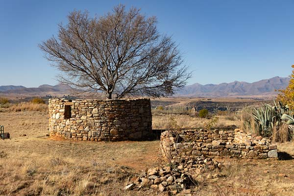
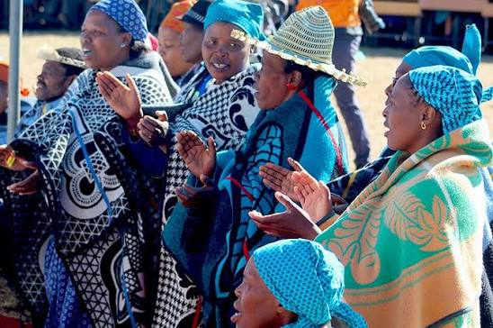

About the Festival |
||||
| Home | About | Programme | Tickets | Contact |
|
The Thaba Bosiu Tourism Festival was created to promote the historical significance of the mountain. It highlights how the site played an important role in protecting the Basotho nation. The event attracts tourists who want to learn about Lesotho’s rich cultural heritage. It also supports conservation of historical sites. Visitors experience traditional music, food, and cultural exhibitions during the festival. The environment is both educational and entertaining for all age groups. The event supports local businesses and promotes tourism growth. It is a meaningful celebration of Basotho identity.  Historical view of Thaba Bosiu  Traditional Basotho attire |
||||
© 2026 Thaba Bosiu Tourism Festival